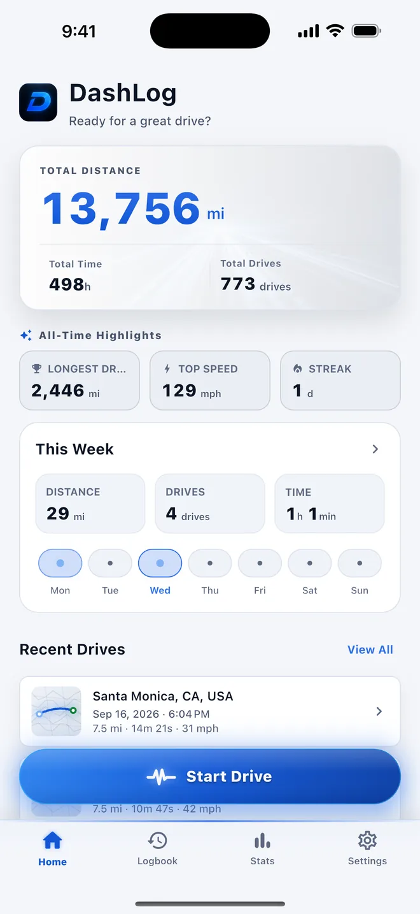

用 DashLog 自动记录每一次驾驶——4 个步骤
整个流程就是设置一次 → 照常开车 → 回放 → 导出。完成一次性设置后，DashLog 会自动开始记录，你再也不用记着去按“开始”。无需账号，记录保存在你的设备上。
设置为自动记录
先完成一次性设置。在 iPhone 上，添加一个“快捷指令”自动化，在汽车连接时打开 DashLog；在安卓上，只需在 App 内配对一次车载蓝牙。把位置权限设为“始终”，这样它才能在后台记录。

照常开车
手机连接CarPlay 或车载蓝牙时自动开始记录，断开时自动停止——实时路线、车速和里程会随着行驶不断更新。记录本身不需要网络信号，你也随时可以手动点按“开始”和“停止”。

回放路线，查看统计
每一次驾驶都会保存路线、里程、时间、车速和海拔。在地图上回放走过的路，准确看到自己去过哪里；在统计页面还能查看每日、每周、每月和每年的汇总。

导出 GPX、CSV 或时段报告
单次驾驶可以导出为GPX 或 CSV，也可以把一整段时间——今天、本周、本月或今年——导出为一份报告。你还可以导入其他 App 的 GPX 文件，把所有记录集中在同一本行车日志里。

DashLog — GPS Drive Tracker
一款 GPS 行车轨迹记录 App 和行车日志，连接 CarPlay 或车载蓝牙即可自动记录路线、里程、车速和统计数据。记录保存在设备上——无需账号，没有订阅。
为什么自动记录、本地保存很重要
行车日志只有完整才有用——而你忘了记录的那几次，往往正是你需要的。DashLog 的解决办法是在汽车连接时自动开始，每一趟行程都会被记下，完全不用操心。而且记录保存在本地、无需账号，你详细的出行轨迹不会存放在别人的云端。
得记得开始，还要同步上云
每次出发前都得手动点记录，而且你的路线会上传到别人服务器上的账号里。
自动开始，留在手机上
汽车连接时即开始记录，每一次驾驶都保存在设备上——无需账号，没有云同步。
自动行车日志能用来做什么
每一次驾驶都自动记录之后，这本日志就可以随你使用：
- 你开过的里程，留作自己的记录——如果你自己维护里程台账，可以导出为 CSV（DashLog 不是可直接用于报税的行车日志）
- 自驾游回忆——几个月后还能回放当时走过的路线
- 摩托车和骑行，同样可以自动记录
- 给其他工具用的 GPX——导出到地图、运动健身或编辑类 App
有一项需要设置正确：自动记录需要把位置权限设为“始终”，并完成一次性的 CarPlay 或蓝牙触发设置。之后它就会自己运行。
常见问题
DashLog 会自动记录驾驶吗？
会，只需一次性设置。手机连接 CarPlay 或车载蓝牙时开始记录，断开时停止。在 iPhone 上通过“快捷指令”自动化实现；在安卓上只需在 App 内配对一次车载蓝牙。位置权限必须设为“始终”。你也可以一键手动开始和结束一次驾驶。
DashLog 需要注册账号吗？
不需要。DashLog 无需账号或注册，驾驶记录保存在你设备的本地。
DashLog 每次驾驶会记录哪些内容？
GPS 路线、里程、时长、车速和海拔，以及按日、周、月、年和全部时间汇总的驾驶统计。
可以导出驾驶记录吗？
可以。单次驾驶可导出为 GPX 或 CSV，也可以把一整段时间（今天、本周、本月、上月或今年）导出为一份报告。还可以导入其他 App 生成的 GPX 文件。
DashLog 免费吗？iPhone 和安卓都能用吗？
是的。DashLog 可免费下载和使用，没有订阅，iPhone 版在 Apple App Store 提供，安卓版在 Google Play 提供。
让下一次驾驶自动记录。
安装后，一次性设置只需几分钟——之后每一次驾驶都会自动记录。有任何不清楚的地方，都由开发者本人直接解答。
grayforge.dev@gmail.com